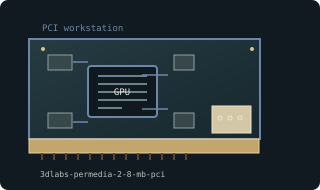

[ EARLY 2D AND 3D ACCELERATORS // IDENTIFIED COMPONENT ]
3Dlabs Permedia 2 8 MB PCI
GLINT Permedia 2 workstation graphics, 1997. This entry identifies one model or reference configuration; related products and OEM variants are distinguished below.

MODEL / VARIANT: Permedia 2 and Permedia 2V/3 differ; memory, rasterizer clock, and OpenGL driver certification depend on OEM card and revision.
Recorded specifications
| Cataloged product | 3Dlabs Permedia 2 8 MB PCI |
|---|---|
| Generation / core | GLINT Permedia 2 workstation graphics, 1997 |
| Core & memory | Permedia 2 graphics processor; 8 MB SGRAM common workstation configuration; OpenGL-optimized 2D/3D pipeline and optional texture-memory expansion on some boards. |
| Host interface & I/O | 32-bit PCI workstation card; analog VGA output; some board revisions add expansion daughterboards or alternate output adapters. |
| Variant boundary | Permedia 2 and Permedia 2V/3 differ; memory, rasterizer clock, and OpenGL driver certification depend on OEM card and revision. |
| Archival identification | Record full part number, PCB or module revision, BIOS/firmware, device/subsystem IDs, driver version, adapters, physical condition and source-document edition. |
Compatibility, service & archival notes
Workstation card family, not later Oxygen VX1; the exact 8 MB capacity is board-specific.
Record board vendor and PCI IDs; preserve professional drivers and any texture daughterboard. Inspect connector edge and passive/active cooler; verify driver support for target OS.
- Check signaling, slot keying, lane width, power pinout, board/module dimensions, case clearance, airflow and PSU requirements for the exact specimen.
- Use drivers supporting its device ID and target OS. Preserve original installer and firmware copies, and record their versions before changes.
- Do not energize boards with corrosion, cracks, damaged connectors, obstructed cooling or suspected shorts; document condition before bench testing.
Manufacturer, model & standards sources
- 3Dlabs GLINT/Permedia product family archiveModel/product-history reference; compare the exact card revision and nameplate.
- 3Dlabs graphics product archiveManufacturer or archived product/driver documentation; exact OEM board details may differ.
- PCI Express interface standardHost interface reference; confirm exact physical and electrical compatibility.
- Hardware Review — 3DLabs Permedia 2 - Tested in 6 GamesIndependent video review; treat as supplementary context, not primary manufacturer documentation.
Reference specifications do not supersede the board vendor's manual or nameplate. Performance figures are vendor claims unless explicitly identified as measured.